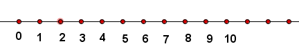
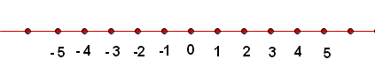
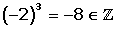
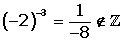
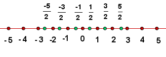
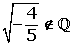

Números irracionales
Los números naturales
Con los números naturales contamos los elementos de un conjunto (número cardinal). O bien expresamos la posición u orden que ocupa un elemento en un conjunto (ordinal).
El conjunto de los números naturales está formado por:
N= {0, 1, 2, 3, 4, 5, 6, 7, 8, 9,...}

La suma y el producto de dos números naturales es otro número natural.
La diferencia de dos números naturales no siempre es un número natural, sólo ocurre cuando el minuendo es mayor que sustraendo.
5 − 3
3 − 5
El cociente de dos números naturales no siempre es un número natural, sólo ocurre cuando la división es exacta.
6 : 2
2 : 6
Podemos utilizar potencias, ya que es la forma abreviada de escribir un producto formado por varios factores iguales.
La raíz de un número natural no siempre es un número natural, sólo ocurre cuando la raíz es exacta.
Los números enteros
Los números enteros son del tipo:
 = {...−5, −4, −3, −2, −1, 0, 1, 2, 3, 4, 5 ...}
= {...−5, −4, −3, −2, −1, 0, 1, 2, 3, 4, 5 ...}

Nos permiten expresar: el dinero adeudado, la temperatura bajo cero, las profundidades con respecto al nivel del mar, etc.
La suma, la diferencia y el producto de dos números enteros es otro número entero.
El cociente de dos números enteros no siempre es un número entero , sólo ocurre cuando la división es exacta.
6 : 2 
2 : 6 
Podemos operar con potencias, pero el exponente tiene que ser un número natural.


La raíz de un número entero no siempre es un número entero, sólo ocurre cuando la raíz es exacta o si se trata de una raíz de índice par con radicando positivo.
Los números racionales
Se llama número racional a todo número que puede representarse como el cociente de dos enteros, con denominador distinto de cero.


Los números decimales (decimal exacto, periódico puro y periódico mixto) son números racionales; pero los otros números decimales ilimitados no.
La suma, la diferencia, el producto y el cociente de dos números racionales es otro número racional.
Podemos operar con potencias, pero el exponente tiene que ser un número entero.
La raíz de un número racional no siempre es un número racional, sólo ocurre cuando la raíz es exacta y si el índice es par el radicando ha de ser positivo.

Los números irracionales
Un número es irracional si posee infinitas cifras decimales no periódicas, por tanto no se pueden expresar en forma de fracción.
El número irracional más conocido es  , que se define como la relación entre la longitud de la circunferencia y su diámetro.
, que se define como la relación entre la longitud de la circunferencia y su diámetro.
 = 3.141592653589...
= 3.141592653589...
Otros números irracionales son:
El número e aparece en procesos de crecimiento, en la desintegración radiactiva, en la fórmula de la catenaria, que es la curva que podemos apreciar en los tendidos eléctricos.
e = 2.718281828459...
El número áureo, , utilizado por artistas de todas las épocas (Fidias, Leonardo da Vinci, Alberto Durero, Dalí,..) en las proporciones de sus obras.